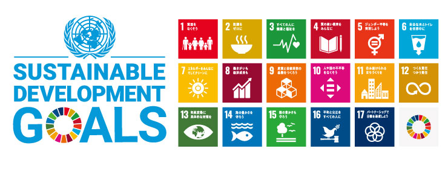
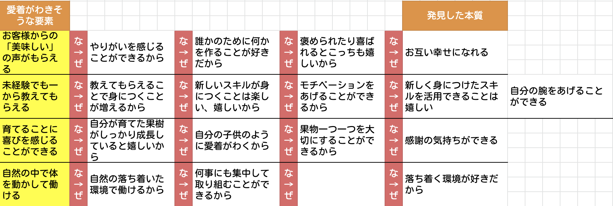
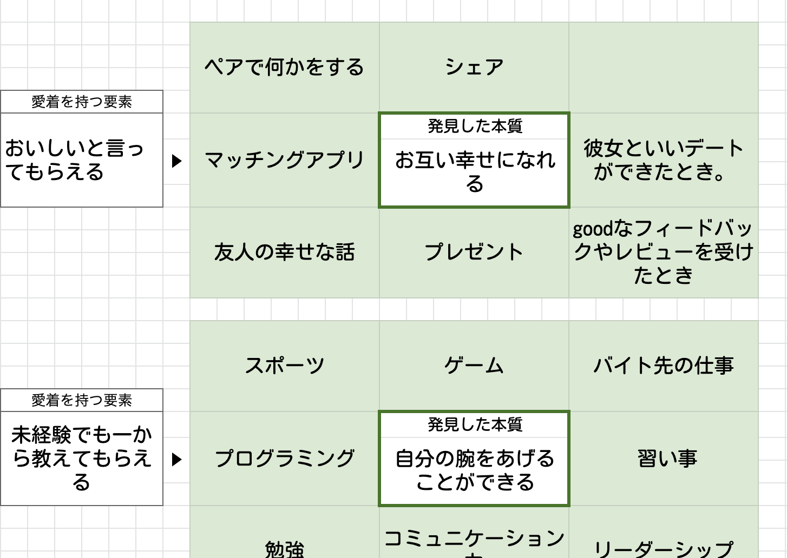
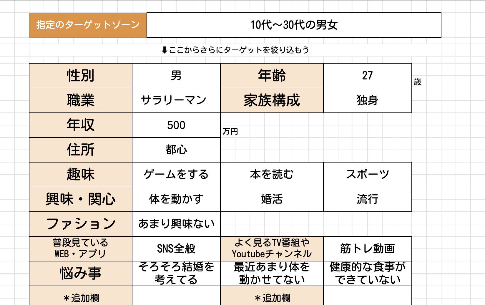

11月下旬から実施されたProjectN
内容は”若者に農業を面白いと思わせる画期的なアイディアを考える！”
作業に入る前に、農業のお仕事のことやSDGsについて調べました
SDGsとは？
畑作、稲作、林業...たくさんあるお仕事の中、自分たちは”果樹”に決定


果樹に愛着がわく要素を”なぜなぜ”を繰り返して
果樹に愛着がわく要素を”なぜなぜ”を繰り返して
”本質”を探し、その見つけた本質を持っている
似たものを探しました
そこででた”マッチングアプリ”に注目し、果樹とマッチングアプリ組み合わせたら
面白いんじゃないか！？ と思い、方向性を決定！
メタファーやペルソナも決め、スライド制作！見やすくなるよう、何回も修正しました
